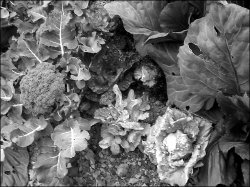

Watering, feeding, and pests
What a windy beginning to our new growing season! Hopefully this hasn’t deterred you from planting out your vegetable patch. Prolonged periods of wind offer a few challenges for the new seedlings (and the novice gardener). Tender seedlings can often be stressed and slow to grow in a unsheltered site. They may actually be burnt by the wind, due to the low humidity and rapid loss of ground moisture. Be sure to water them well and often during these unseasonal windy patches.
Various vegetables can only be planted once at the beginning of summer, as our season is quite short compared to how long it takes them to ripen. These include tomatoes, cucumbers, pumpkin, potatoes, sweetcorn, zucchini, celery, runner beans, capsicum and melons.
Throughout the growing season (till around the end of February), plant successive rows of lettuces, cabbages, cauliflower, broccoli, carrots and snap peas. This way you will be sure to have fresh veges all summer and autumn long.
Slugs and snails can be a problem, completely demolishing tender seedlings by chewing through the main stem. They come out at night when you least expect them! You can spray your vegetables with an insecticide, or lay pelleted bait around your plants (preferably under stones, or in small lengths of plastic tubing to deter birds, pets and children from eating them). You can also the kill snails and slugs by dropping them into a bucket of salty water. Remove garden debris, loose piles of stones, leaves and old weeds – they may hide in these during the day.
White butterfly caterpillars are also a real nuisance. The butterfly appears midsummer and lays her eggs under the leaves of many vegetable plants, especially cabbages. The maturing plant is a convenient supermarket for rapidly chewing caterpillars! The small holes left in the outer leaves are not the problem, it’s the honeycomb effect in the middle of cabbages (as well as the resultant defecation!). Sprinkle Derris Dust over the seedlings and larger plants, or spray them with Neem Oil once you notice the butterflies around. (Derris Dust and Neem Oil are natural insecticides, great for killing and deterring aphids and other sap-sucking insects.)
Aphids love to feed off tender new shoots on all sorts of plants. They will pierce a hole in the outside wall of the stem and sit and suck up the sap, depriving the plant of its energy source.
Mildew is a white mold that grows on cucumbers, cabbages and pumpkins. It can defoliate (kill the leaves on) an entire plant quite quickly. Remove infected leaves and throw them in the rubbish, not the compost bin. Spray the plants with a fungicide or a 50/50 mixture of trim milk and water. This milk and water mix will need to reapplied after each rainfall.
Remember to feed and water your garden regularly. It surprises me that even experienced gardeners forget to provide these basic requirements on a regular basis throughout the growing season. Developing plants will deplete the soil very quickly, and to ensure a steady rate of growth it is essential to replenish the supply.
A general fertiliser such as Nitrophoska Blue can be spread on top of the soil, worked in with a trowel and then watered in. Ensure the fertiliser doesn’t rest against any stems, as it may burn through the plants, effectively killing them! Reapply fertiliser at least once a month, throwing on about two handfuls per square metre. Compost makes a great mulch between plants, and provides renewed nutrients and a moisture retention layer.
A long, slow water once a week is an effective way to ensure that the roots of all plants are kept moist and encouraged to grow deeply. A strong root system anchors the plant in place and will withstand the effects of wind far better. I have a regular pattern in my gardens of systematically watering each bed of flowers or vegetables once a week for at least an hour, even if it rains during that week.
The ideal time to water is early morning. This allows the foliage to dry quickly and helps prevent bacterial diseases and mildews. If I can’t arrange my day to accommodate this I’ll water in the early evening. Never water during the heat of the day – it can burn the plants as it dries (it’s also a gross waste of a valuable resource, with a substantial amount evaporating almost immediately).
Next issue I’ll look at making and maintaining a compost stack. Remember to keep those gardening questions coming in to gardening.
Janette Bartlett was born in Nelson (pop. 45,000).